Home
Brake fluid supply bottle
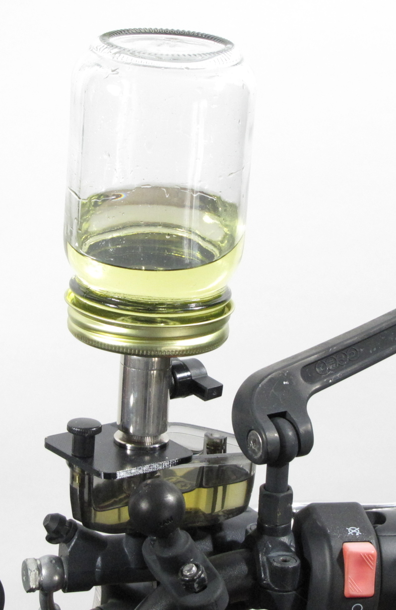
I do all the maintenance on my bikes by myself, so I need to be a little creative when it comes to replacing
brake and clutch fluid, as this is usually a two-person job.
For the caliper end of things, I use Stahlbus bleeder
valves. They're far superior to SpeedBleeders, and worth the price. (see discussion
below)
For the master cylinder end, I created a cheap brake fluid supply bottle out of a pint Mason canning jar and $30
in computer water-cooling parts. It has a valve to open and close it.
To hold it in place, I use a small plate with a thumbscrew that screws into the same hole that holds on the
master cylinder lid.
I've used pressure bleeders and other equipment, but this is the simplest and cleanest method I've used so far.
I've used commercial supply bottles, but they're all designed for cars and don't attach well to the master
cylinder, and the valves are usually very poor quality. They end up leaking fluid everywhere, and make more of a
mess and hassle than they save.
Usage
Close the valve, then flip the bottle over.
The thumbscrew simply threads into one of the master cylinder lid screw holes with the standard M4 thread used by
all Japanese bikes - and the Italian and German ones I've run into as well.
Open the valve. As the fluid drops below the barb, air bubbles into the bottle, which releases fluid to raise the
level back up to the bottom of the barb. It's the same principle as Harbor Freight or Mityvac bottles, but it
actually works.
Required PC water cooling parts
They're generic parts you should be able to find anywhere online.
 |
Ball valve (10mm) G1/4" ($19)
Prevents spilling when the bottle is inverted.
|
 |
G1/4" to 1/2" barb fitting ($3)
Controls the level of fluid in the master cylinder reservoir.
Get a "stubby" fitting to allow a higher level of fluid in the master cylinder.
You need 1 for the front brakes, and 3 for the rear brakes.
|
| 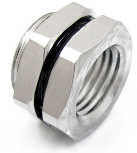 |
G1/4" to G1/4" bulkhead fitting ($5)
Seals the bottle lid and provides a mount for everything else.
|
 |
Nozzle coupling adapter, G1/4" male-male ($3)
Connects the ball valve to the other parts.
2 required
|
| 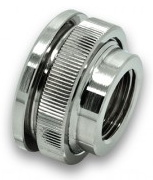 |
Pass-through G1/4" ($7)
Supports the mounting plate. |
| 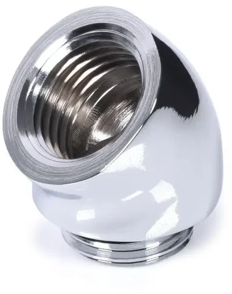 |
45° adapter G1/4" male-female ($7)
For the rear brake extension. |
| 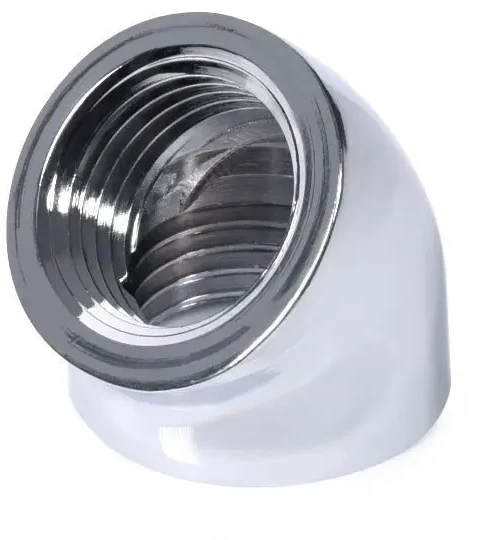 |
45° adapter G1/4" female-female ($5)
For the rear brake extension. |
Other required parts
| 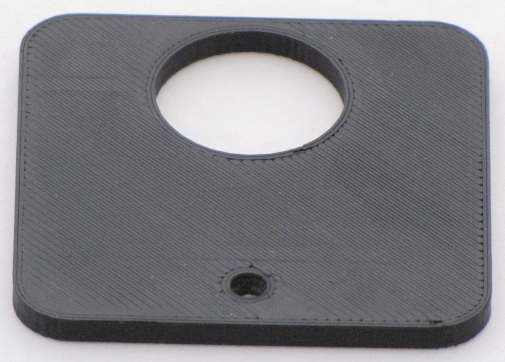 |
3D-print the mount plate using the brake_fluid_plate.stl (created
from brake_fluid_plate.scad)
I used PETG filament. PLA and ABS aren't really compatible with brake fluid.
You can also make it out of a piece of aluminum using these
dimensions.
|
| 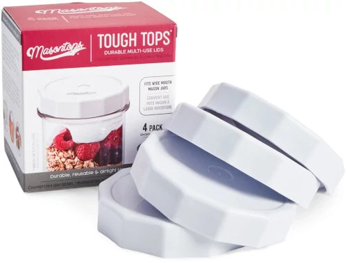 |
A box of "Tough Tops"
from masontops.com at the local Publix.
These are heavy-duty plastic one-piece mason jar tops with a nice silicone seal and a "premarked center"
(the injection molding scar) for drilling. They don't require a washer for reinforcement, and they
aren't affected by brake fluid.
Normal lids are thin sheet metal which is not really up to the task.
|
| 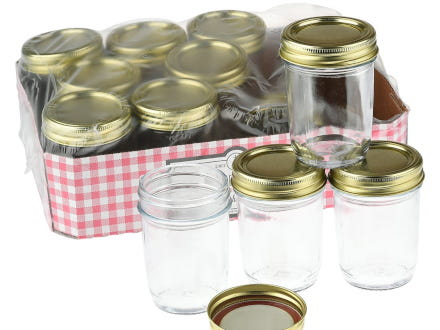 |
Pint size standard-mouth smooth Mason jars.
Do not get the quart size jars, or the large-mouth jars. They're too big and heavy.
Do not get Ball jars. They have all sorts of decorations that cause problems with cracking, including
their "smooth" ones.
I got Anchor-Hocking jars, which are truly smooth and are available in 6-packs at my local Publix.
|
| 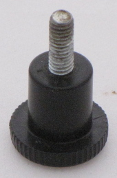 |
VESA monitor mount thumbscrew with M4 thread, which is the same as the master cylinder reservoir thread.
|
|
Bottle Assembly
This image shows the assembly order.
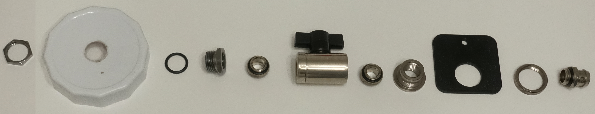
- The first piece is the nut to the bulkhead fitting.
- Drill a 5/8" hole in the center of the "Tough Tops" plastic lid with a #3 (1/4"-3/4") step bit (also known as
a unibit) to accept the bulkhead fitting. This is the best way to cut the thin plastic of the lid.
After you cut the hole, flip the lid over and lightly touch the bit to the plastic to remove any burrs.
- There is an o-ring between the lid and the bulkhead fitting.
- Screw a nozzle coupling adapter on the bulkhead fitting. It has its own pair of o-rings.
- Screw the ball valve to the coupling.
- Screw the other nozzle coupling adapter onto the other end of the ball valve.
- Screw the pass-through onto the coupling.
- Remove the threaded collar, fit the 3D-printed plate, and screw the collar back on.
- Screw the short barb fitting to the pass-through. I drilled a small hole to adjust the fluid level to my
liking.
Rear Brakes
Rear brakes are a challenge because the master cylinder reservoir is tucked into the bike, and some systems
don't even have one.
You can get a 3-prong or 4-prong clamp for lab glassware, and a corresponding right angle clamp that holds it to
a vertical rod.
I got a 3ft long 5/8" steel rod from Lowe's, which fits into a Manfrotto #171 Mini Clamp, that clamps to the edge
of the Harbor Freight bike lift. That clamp is a bit expensive, but there are "tiki torch deck clamps" available
that might work. I don't know how rigid they are.
Add the two 45° adapters, 3 barb fittings, and a 2" piece of clear hose, and you will have something with the
required reach that's very adjustable and very stable.
If you don't have a bike lift, then you might use an ordinary small photography tripod or lighting stand. The
right angle lab clamp can accept any vertical rod.
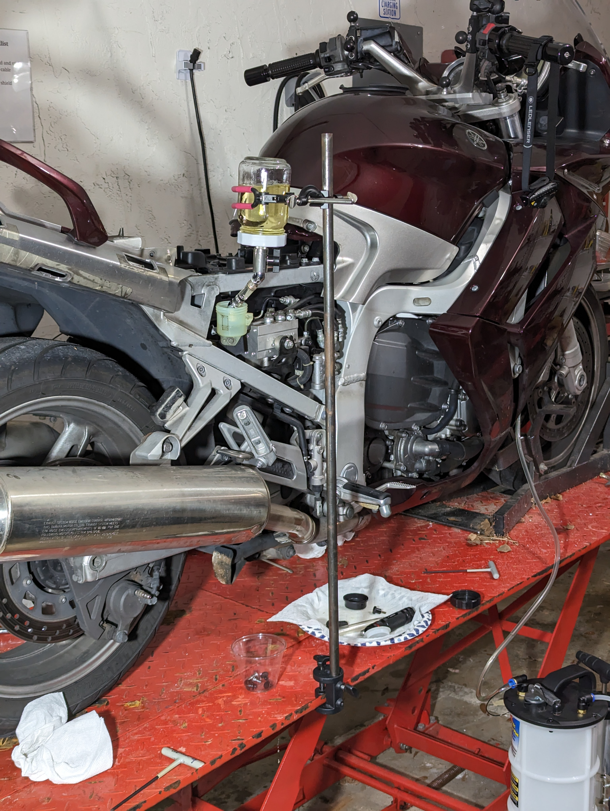
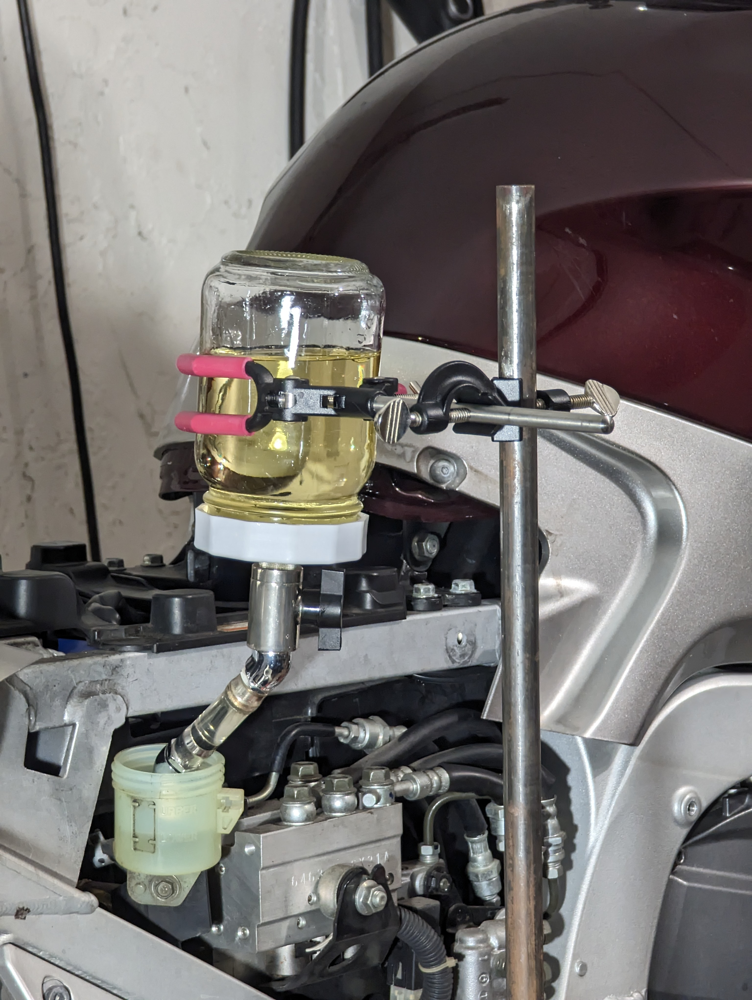
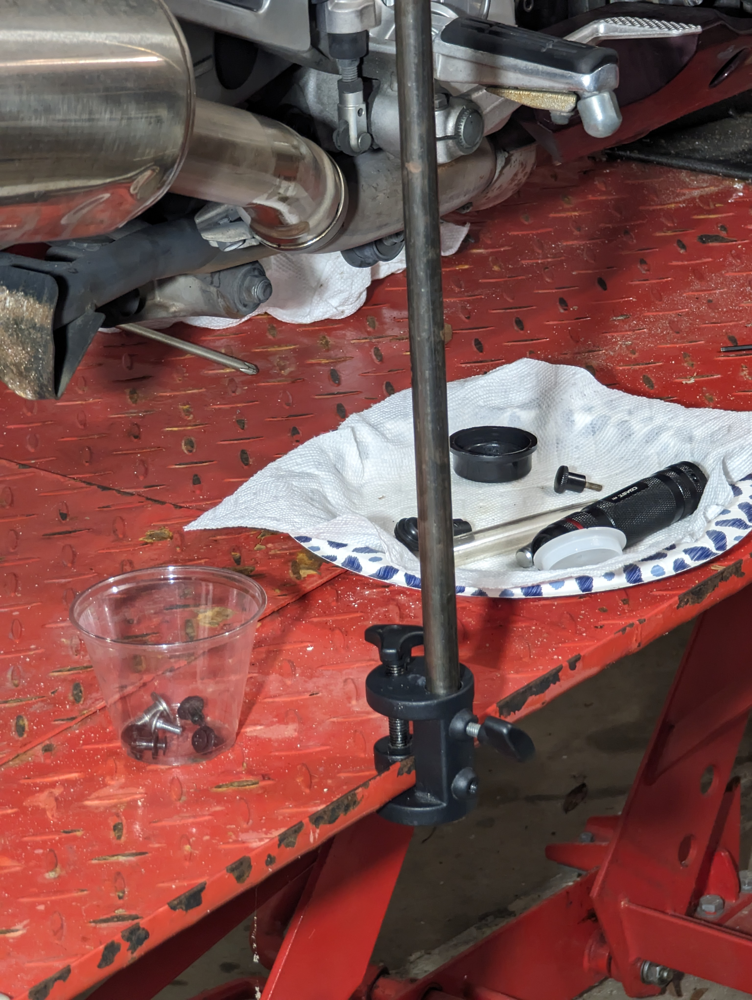
A note about SpeedBleeders vs. Stahlbus bleeders
SpeedBleeders are brake bleeder nipples with spring-loaded one-way check-valve balls. They're a nice idea.
The problem is when you loosen them to release the check-valves, fluid leaks out and air is sucked in past the
threads where they screw into the caliper.
You can work around this by smearing grease around the threads or other methods, but it's still a mess.
With Stahlbus bleeders, the nipple with the check-valve screws into an O-ring sealed chamber, which then screws
solidly into the caliper. No leaks.
Another advantage of the design is that you can control how loose the valve is, and how easily it passes
fluid. You can even loosen them enough to fill the system through the bleeders.